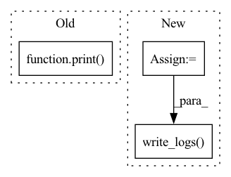

Pattern ID :268
Before Change
// run adaptation episodes
for curri_iter in range(len(config["data"]["target"]["name"])):
print( "Starting the adaptation...")
//////////////// Step 1: train one adaptation episod on combined target domains ////////////////////
target_train_datasets = preprocess.ConcatDataset(dsets["target_train"].values())
dset_loaders["target_train"] = DataLoader(dataset=target_train_datasets,
batch_size=config["data"]["target"]["batch_size"],After Change
base_network, classifier_gnn = trainer.adapt_target_cgct(config, base_network, classifier_gnn,
dset_loaders, random_layer, adv_net)
log_str = "==> Finishing {} adaptation episode!\n".format(curri_iter)
utils.write_logs( config, log_str)
////////////////// Step 2: obtain the target pseudo labels and upgrade target domains ////////////////////
trainer.upgrade_target_domains(config, dsets, dset_loaders, base_network, classifier_gnn, curri_iter)
In pattern: SUPERPATTERN
Frequency: 3
Non-data size: 3
Instances Fragment ID: 2093291
Project Name: evgeneus/graph-domain-adaptaion
Commit Name: 23eecc1d442dbc615eb94473f8de279bd1e31688
Time: 2021-06-03
Author: e.krivoshe@gmail.com
File Name: src/main_cgct.py
M Class Name: AnonimousClass
N Class Name: AnonimousClass
M Method Name: main(1)
N Method Name: main(1)
M Parent Class:
N Parent Class:
M File Name: src/main_cgct.py
N File Name: src/main_cgct.py
M Start Line: 91
M End Line: 108
N Start Line: 61
N End Line: 123
Before Change
random_layer = networks.RandomLayer([base_network.output_num(), class_num], config["random_dim"], DEVICE)
print(random_layer)
adv_net = networks.AdversarialNetwork(config["random_dim"], config["random_dim"], config["ndomains"])
print( adv_net)
random_layer.to(DEVICE)
adv_net = adv_net.to(DEVICE)
// configure optimizerAfter Change
classifier_gnn.train()
adv_net.train()
random_layer.train()
for i in range(config["adapt_iters"]):
optimizer = utils.inv_lr_scheduler(optimizer, i, **schedule_param)
optimizer.zero_grad()
// get input data
if i % len_train_source == 0:
iter_source = iter(dset_loaders["source"])
if i % len_train_target == 0:
iter_target = iter(dset_loaders["target_train"][max_inherit_domain])
batch_source = iter_source.next()
batch_target = iter_target.next()
inputs_source, inputs_target = batch_source["img"].to(DEVICE), batch_target["img"].to(DEVICE)
labels_source = batch_source["target"].to(DEVICE)
domain_source, domain_target = batch_source["domain"].to(DEVICE), batch_target["domain"].to(DEVICE)
domain_input = torch.cat([domain_source, domain_target], dim=0)
// make forward pass for encoder and mlp head
features_source, logits_mlp_source = base_network(inputs_source)
features_target, logits_mlp_target = base_network(inputs_target)
features = torch.cat((features_source, features_target), dim=0)
logits_mlp = torch.cat((logits_mlp_source, logits_mlp_target), dim=0)
softmax_mlp = nn.Softmax(dim=1)(logits_mlp)
mlp_loss = ce_criterion(logits_mlp_source, labels_source)
// *** GNN at work ***
// make forward pass for gnn head
logits_gnn, edge_sim = classifier_gnn(features)
gnn_loss = ce_criterion(logits_gnn[:labels_source.size(0)], labels_source)
// compute pseudo-labels for affinity matrix by mlp classifier
out_target_class = torch.softmax(logits_mlp_target, dim=1)
target_score, target_pseudo_labels = out_target_class.max(1, keepdim=True)
idx_pseudo = target_score > config["threshold"]
target_pseudo_labels[~idx_pseudo] = classifier_gnn.mask_val
// combine source labels and target pseudo labels for edge_net
node_labels = torch.cat((labels_source, target_pseudo_labels.squeeze(dim=1)), dim=0).unsqueeze(dim=0)
// compute source-target mask and ground truth for edge_net
edge_gt, edge_mask = classifier_gnn.label2edge(node_labels)
// compute edge loss
edge_loss = criterion_gedge(edge_sim.masked_select(edge_mask), edge_gt.masked_select(edge_mask))
// *** Adversarial net at work ***
if config["method"] == "CDAN+E":
entropy = transfer_loss.Entropy(softmax_mlp)
trans_loss = transfer_loss.CDAN(config["ndomains"], [features, softmax_mlp], adv_net,
entropy, networks.calc_coeff(i), random_layer, domain_input)
elif config["method"] == "CDAN":
trans_loss = transfer_loss.CDAN(config["ndomains"], [features, softmax_mlp],
adv_net, None, None, random_layer, domain_input)
else:
raise ValueError("Method cannot be recognized.")
// total loss and backpropagation
loss = config["lambda_adv"] * trans_loss + mlp_loss +\
config["lambda_node"] * gnn_loss + config["lambda_edge"] * edge_loss
loss.backward()
optimizer.step()
// printout train loss
if i % 20 == 0 or i == config["adapt_iters"] - 1:
log_str = "Iters:(%4d/%d)\tMLP loss: %.4f\t GNN Loss: %.4f\t Edge Loss: %.4f\t Transfer loss:%.4f" % (
i, config["adapt_iters"], mlp_loss.item(), config["lambda_node"] * gnn_loss.item(),
config["lambda_edge"] * edge_loss.item(), config["lambda_adv"] * trans_loss.item()
)
utils.write_logs( config, log_str)
// evaluate network every test_interval
if i % config["test_interval"] == config["test_interval"] - 1:
evaluate(i, config, base_network, classifier_gnn, dset_loaders["target_test"])
Fragment ID: 2093290
Project Name: evgeneus/graph-domain-adaptaion
Commit Name: 01c1dadb800008a82057d4949f73f180cba568a8
Time: 2021-04-13
Author: subhankar.roy@unitn.it
File Name: src/trainer.py
M Class Name: AnonimousClass
N Class Name: AnonimousClass
M Method Name: adapt_target(5)
N Method Name: adapt_target(5)
M Parent Class:
N Parent Class:
M File Name: src/trainer.py
N File Name: src/trainer.py
M Start Line: 181
M End Line: 266
N Start Line: 210
N End Line: 271
Before Change
// printout train loss
if i % 20 == 0:
print( "Iters:(%4d/%d)\tMLP loss:%.4f\tGNN loss:%.4f\tEdge loss:%.4f" % (i,
config["source_iters"], mlp_loss.item(), gnn_loss.item(), edge_loss.item()))
// evaluate network every test_interval
if i % config["test_interval"] == config["test_interval"] - 1:
evaluate(i, config, base_network, classifier_gnn, dset_loaders["target_test"])
After Change
base_network.train()
classifier_gnn.train()
len_train_source = len(dset_loaders["source"])
for i in range(config["source_iters"]):
optimizer = utils.inv_lr_scheduler(optimizer, i, **schedule_param)
optimizer.zero_grad()
// get input data
if i % len_train_source == 0:
iter_source = iter(dset_loaders["source"])
batch_source = iter_source.next()
inputs_source, labels_source = batch_source["img"].to(DEVICE), batch_source["target"].to(DEVICE)
// make forward pass for encoder and mlp head
features_source, logits_mlp = base_network(inputs_source)
mlp_loss = ce_criterion(logits_mlp, labels_source)
// make forward pass for gnn head
logits_gnn, edge_sim = classifier_gnn(features_source)
gnn_loss = ce_criterion(logits_gnn, labels_source)
// compute edge loss
edge_gt, edge_mask = classifier_gnn.label2edge(labels_source.unsqueeze(dim=0))
edge_loss = criterion_gedge(edge_sim.masked_select(edge_mask), edge_gt.masked_select(edge_mask))
// total loss and backpropagation
loss = mlp_loss + config["lambda_node"] * gnn_loss + config["lambda_edge"] * edge_loss
loss.backward()
optimizer.step()
// printout train loss
if i % 20 == 0 or i == config["source_iters"] - 1:
log_str = "Iters:(%4d/%d)\tMLP loss:%.4f\tGNN loss:%.4f\tEdge loss:%.4f" % (i,
config["source_iters"], mlp_loss.item(), gnn_loss.item(), edge_loss.item())
utils.write_logs( config, log_str)
// evaluate network every test_interval
if i % config["test_interval"] == config["test_interval"] - 1:
evaluate(i, config, base_network, classifier_gnn, dset_loaders["target_test"])
Fragment ID: 2093287
Project Name: evgeneus/graph-domain-adaptaion
Commit Name: 01c1dadb800008a82057d4949f73f180cba568a8
Time: 2021-04-13
Author: subhankar.roy@unitn.it
File Name: src/trainer.py
M Class Name: AnonimousClass
N Class Name: AnonimousClass
M Method Name: train_source(4)
N Method Name: train_source(4)
M Parent Class:
N Parent Class:
M File Name: src/trainer.py
N File Name: src/trainer.py
M Start Line: 165
M End Line: 167
N Start Line: 140
N End Line: 170
Before Change
////////////////// Step 3: fine-tuning stage //////////////////////
config["source_iters"] = config["finetune_iters"]
base_network, classifier_gnn = trainer.train_source(config, base_network, classifier_gnn, dset_loaders)
print( "Finished training and evaluation!")
// save models
if args.save_models:
torch.save(base_network.cpu().state_dict(), os.path.join(config["output_path"], "base_network.pth.tar"))After Change
// run adaptation episodes
log_str = "==> Starting the adaptation"
utils.write_logs(config, log_str)
for curri_iter in range(len(config["data"]["target"]["name"])):
//////////////// Step 1: train one adaptation episod on combined target domains ////////////////////
target_train_datasets = preprocess.ConcatDataset(dsets["target_train"].values())
dset_loaders["target_train"] = DataLoader(dataset=target_train_datasets,
batch_size=config["data"]["target"]["batch_size"],
shuffle=True, num_workers=config["num_workers"],
drop_last=True)
base_network, classifier_gnn = trainer.adapt_target_cgct(config, base_network, classifier_gnn,
dset_loaders, random_layer, adv_net)
log_str = "==> Finishing {} adaptation episode!\n".format(curri_iter)
utils.write_logs( config, log_str)
////////////////// Step 2: obtain the target pseudo labels and upgrade target domains ////////////////////
trainer.upgrade_target_domains(config, dsets, dset_loaders, base_network, classifier_gnn, curri_iter)
Fragment ID: 2093286
Project Name: evgeneus/graph-domain-adaptaion
Commit Name: 23eecc1d442dbc615eb94473f8de279bd1e31688
Time: 2021-06-03
Author: e.krivoshe@gmail.com
File Name: src/main_cgct.py
M Class Name: AnonimousClass
N Class Name: AnonimousClass
M Method Name: main(1)
N Method Name: main(1)
M Parent Class:
N Parent Class:
M File Name: src/main_cgct.py
N File Name: src/main_cgct.py
M Start Line: 91
M End Line: 108
N Start Line: 61
N End Line: 123